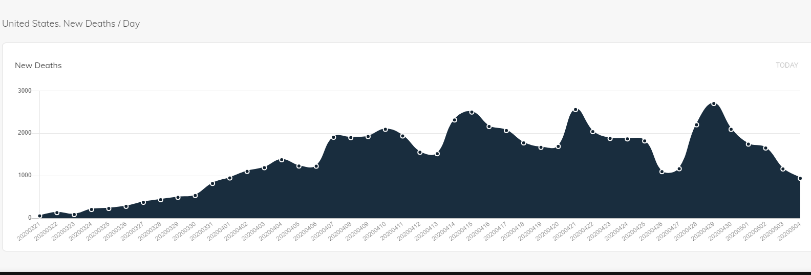

US Historical New Deaths Incorrect
Issue number 360
rizanc opened this issue on May 4, 2020 at 4:04 pm
For 2020/05/04 , historical US API incorrectly reports 18,938 new deaths.
Comments
The issue is with Louisiana. You added an extra zero. Should be 2,064 deaths, no 20,064 deaths.
Yup. Indeed. You should see this as fixed. Thanks for the ping. We got the fix in right away, but it took a while to rebuild.
A
On Mon, May 4, 2020 at 2:21 PM tntnomad notifications@github.com wrote:
The issue is with Louisiana. You added an extra zero. Should be 2,064 deaths, no 20,064 deaths.
— You are receiving this because you commented. Reply to this email directly, view it on GitHub https://github.com/COVID19Tracking/issues/issues/360#issuecomment-623712729, or unsubscribe https://github.com/notifications/unsubscribe-auth/ACS7NYI7WD53XWWMSDVF6KLRP4WVVANCNFSM4MZCUMSQ .
– Alexis Madrigal Staff Writer | The Atlantic Co-Founder | The Atlantic’s COVID Tracking Project, covidtracking.com m. 415 602 4953
Thank you sir! 
Yes, we had an extra digit in a cell. Should be fixed in a second.
Thank you,
Alexis
On Mon, May 4, 2020 at 2:04 PM rizanc notifications@github.com wrote:
– Alexis Madrigal Staff Writer | The Atlantic Co-Founder | The Atlantic’s COVID Tracking Project, covidtracking.com m. 415 602 4953